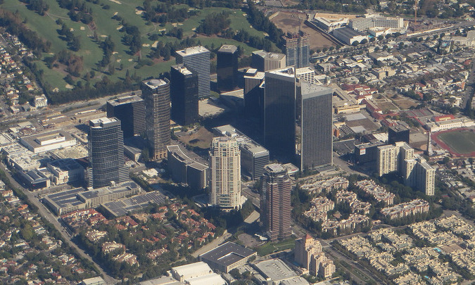

Century City is a 176-acre (71.2 ha) neighborhood and business district in Los Angeles County's Westside. Outside Downtown Los Angeles, Century City is one of the metropolitan area's most prominent employment centers, and its skyscrapers form a distinctive skyline on the Westside.
The district was developed on the former backlot of film studio 20th Century Fox, and its first building was opened in 1963. There are two private schools, but no public schools in the neighborhood. Important to the economy are the Westfield Century City shopping center, business towers, and Fox Studios.